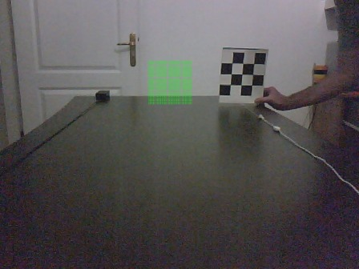
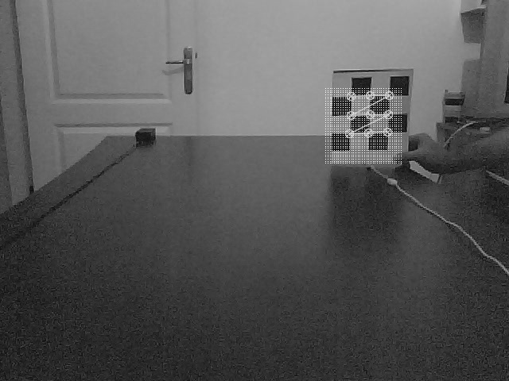
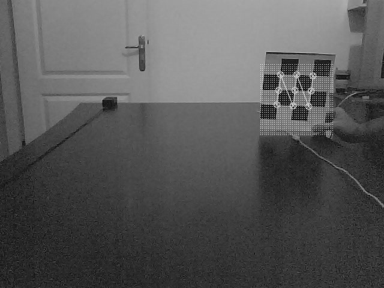

Video görüntülerinde obje takibi için filtreleme kullanmak mümkün, bu teknik ile iki boyutlu yansımadan üç boyutlu konum bilgisini takip edebiliriz. Kalman Filtreleri (KF) ile görüntüde ilgilendiğimiz objeyi her seferinde iki boyutta “bulmalıyız’’, yani bu objenin örüntüsünün ne olduğunu önceden biliyor olmamız gerekir, ve onu sonraki resimlerde takip etmemiz gerekir. Bulduğumuz, iki boyutlu kordinat değerleridir, yani ölçümsel büyüklüklerdir, ardından KF’in en son konumuna göre ürettiği tahmin ile aradaki fark KF’i düzeltmek için kullanılır.
Parçacık filtreleri (PF) ile yine konum ve ölçüm fonksiyonu ikilisi var, fakat ölçüm ile konumdan üretilen tahmin arasındaki uyumu bir olasılık, olurluk (likelihood) olarak belirtmemiz gerekiyor, ki böylece PF tahminde başarılı olan parçacıklara daha fazla önem verebilsin, ve hipotezler o yönde devam etsin.
Alttaki örnekte OpenCV kütüphanesinden elde ettiğimiz 2 boyutlu
değerleri ölçüm \(y_t\) için
kullanacağız. Değerler OpenCV’nin bir satranç tahtası şeklinin köşe
noktalarını cvFindChessboardCorners ile buluyor (ve onları
cvDrawChessboardCorners ile onları resimde
gösteriyoruz).
Elimizdeki “gürültülü’’ ölçümler iki boyutlu noktasal değerler. Gürültülü çünkü kamera bize bu imajları aktarırken hata eklemiş olabilir, OpenCV fonksiyonu hesabı yaparken hata eklemiş olabilir, bir sürü olasılık var.
Kalman Fitreleri
Bu örnekte, ayrıca, ilk kez KF ortamında boyut değişikliği olasılığını net bir şekilde görebiliyoruz. Gizli konum bilgisi \(x_t\) 3 boyutlu bir nokta, ama elimizdeki ölçüm 2 boyutlu bir “yansıma’’. Yansıma sırasında kaçınılmaz olarak değer kaybediliyor, bir boyutun bilgisi ortadan yokoluyor. Ama tüm bu bilinmezlere rağmen Kalman filtresinin bizim için gizli bilgiyi hesaplamasını istiyoruz.
Bu problemde \(\Phi\) matrisi ne olacaktır? Obje takibi konularında \(\Phi\)’nin ne olduğunu hayal etmek daha kolay, \(\Phi\) matrisi iki zaman dilimi arasındaki “hareketi’’ temsil edecek. Bu problemdeki ek bir kolaylık bu hareketi önceden bildiğimiz, ve hareketin tek yönde olduğu. Yani resimde benim tuttuğum kartonu ne kadar hızla hareket ettirdiğimi ben önceden probleme bildiriyorum. Yer değişikliğini \(d\) olarak tanımladım, ve \(\Phi\) şöyle oldu:
\[ \Phi = \left[\begin{array}{rrrr} 1 & 0 & 0 & 0 \\ 0 & 1 & 0 & 0 \\ 0 & 0 & 1 & d \\ 0 & 0 & 0 & 1 \end{array}\right] \]
Dikkat edersek \(\Phi\) 4x4 boyutunda, 3x3 değil. 3 boyutlu kordinatları temsil etmek için homojen kordinat sistemini kullandığımız için böyle oldu, o sebeple zaten \(x_t\) de 4x1 oldu, ona uymak için \(\Phi\)’nin değişmesi gerekiyordu. \(\Phi x_t\) çarpımının hakikaten kartonu hareket ettirdiğini göstermek için bu çarpımı bir örnek üzerinde yapalım: Diyelim ki \(x_t = \left[\begin{array}{cccc}a_1&a_2&a_3&a_4\end{array}\right]\) o zaman \(\Phi x_t\) ya da \(x_{t+1}\) şu hale gelir: \(\left[\begin{array}{cccc}a_1&a_2&a_3+d&a_4\end{array}\right]\).
Bakıyoruz, hakikaten de d kadarlık bir yer değişimi z kordinatı, yani derinlik üzerinde eklenmiş. Test amaçlarımız için d = -0.5 aldık, yani satranç tahta kartonunun her zaman diliminde kameraya doğru 0.5 cm ilerlediğini belirttik. Tabii bu da kabaca bir tahmindi (her ne kadar hareketi yaptıran ben olsam bile!), ama filrelemenin gücünü burada görüyoruz. Benim tahminimde “gürültü’’ yani”hata payı’’ var, ölçümde gürültü var, tüm bunlar üst üste konsa bile filtre yine de gizli konumu bulacak.
Ölçümsel dönüşümü temsil eden H’e ben onun temeli olan yansıtma (projection) kelimesinden gelen P matrisinden bahsedelim. Yansıma matrisi görüntü (vision) literatüründe iğne delik kamerası (pinhole camera) modelinden ileri gelen bir matristir ve bu matrisi hesaplamak ayarlama / kalibrasyon (calibration) denen apayrı bir işlemin parçasıdır. OpenCV içinde kalibrasyon için fonksiyonlar var, biz de bunları denedik, kalibrasyon için kullandığımız resimlerle alakalı olmalı, elde edilen sonuçlardan memnun kalmadık. Alternatif olarak şunu yaptık; resimde görülen yeşil yüzey bizim programın oluşturduğu hayali bir yüzey. Filtrenin o anki tahminini P üzerinden görüntüye yansıtarak bu yüzeyi oluşturduk, böylece deneme / yanılma yöntemiyle pek çok P değerini deneyerek, yüzeyin resimde görülen masanın sonunda çıkacak şekilde olmasını sağladık. Yansıtma için kullanılan \(K\) matrisi, yansıtma metotu ve başlangıç imajı altta:

from numpy import *
K = array([[700., 0., 300.],
[0., 700., 330.],
[0., 0., 1.]])
def proj_board(im, xl, yl, z):
h,w = im.shape[:2]
for x in arange(xl-9, xl+9, 0.5):
for y in arange(yl-9, yl+9, 0.5):
X = array([x, y, z])
q = dot(K, X)
q = [int(q[0]/q[2]), int(q[1]/q[2])]
if q[0] >= w: return
if h-q[1] >= h: return
if h-q[1] < 0: return
im[h-q[1], q[0]] = 255O noktaya gelince istediğimiz P değerini bulmuş oluyorduk. Yansıtma matrisleri 3x3 olur, KF buna bir dördüncü [0 0 0] satırı ekleyerek onu 4x3 H haline getiriyor.
KF’in başlangıç noktası olarak P’yi bulmak için kullandığımız masa sonunu kullandık. Kararsızlık ölçütü Q için, ki bu değişken bir Gaussian kovaryansıdır, \(Q = I \cdot 150 cm\) değerini kullandık, yani oldukça büyük bir kararsızlık değeri kullandık. Sebep başlangıç değeri olan masa ortasını seçtik, ve takip edeceğimiz satranç tahtasının nerede olduğunu bilmiyoruz, “emin değiliz’’. Bu kararsızlığı sayısal olarak programa bildirmiş olduk.
import sys; sys.path.append('../../tser/tser_083_kf')
import util
from kalman_3d import *
import cv2
dim = 3
if __name__ == "__main__":
fin = sys.argv[1]
cap = cv2.VideoCapture(fin)
N = int(cap.get(cv2.CAP_PROP_FRAME_COUNT))
fps = int(cap.get(cv2.CAP_PROP_FPS))
kalman = Kalman(util.K, mu_init=array([1., 1., 165., 0.5]))
for i in range(N):
ret, frame = cap.read()
h,w = frame.shape[:2]
#proj_board(frame, 1, 1, 160) # basla
gray = cv2.cvtColor(frame, cv2.COLOR_BGR2GRAY)
status, corners = cv2.findChessboardCorners( gray, (dim,dim))
is_x = []; is_y = []
if status:
cv2.drawChessboardCorners( gray, (dim,dim), corners, status)
for p in corners:
is_x.append(p[0][0])
is_y.append(p[0][1])
if len(is_x) > 0 :
kalman.update(array([is_x[5], h-is_y[5], 1.]))
util.proj_board(gray,
kalman.mu_hat[0],
kalman.mu_hat[1],
kalman.mu_hat[2])
if i % 10 == 0:
cv2.imwrite('/tmp/kf-out-%d.jpg' % i, gray)
cv2.imshow('frame',gray)
cv2.waitKey(20)
Kalman filtreleri (KF), eğer kararsızlık Gaussian olarak gösterilebiliyorsa çok faydalı, ve hızlı bir yöntem. Bir KF bellekte çok az yer tutar, 3 boyutlu bir Gaussian için 3x1 boyutunda bir ortalama vektörü, ve 3x3 boyutunda bir kovaryans matrisi yeterlidir, yani 3 + 9 = 12 sayı.
 
Parcaçık Filtreleri (Partıcle Filters)
Parçacık filtreleri (PF) bir dağılımı ayrıksal olarak temsil edebilirler. Diyelim ki tek boyutlu bir dağılımı 100 öğe içeren bir dizin ile temsil edebiliriz, o zaman dağılımın değerlerini 100 tane noktada taşımamız gerekir. Bunun faydaları her türlü dağılım şeklini temsil edebilmemiz. Gaussian ile sadece tek bir tepe noktası olabilir, fakat ayrıksal temsil ile 2, 3, istediğimiz kadar tepe noktası olan bir dağılımı temsil edebiliriz. Bu sayede birden fazla gayrı lineer hipotezi aynı anda işletebiliriz. KF ile tepe noktası en iyi tahminimizdir (mesela.. satranç kartonu masa ortasında), PF ile birkaç tahmini aynı anda hesaplatmak mümkün olabilir.
PF kodlaması \(x_t\) için iki tane veri yapısı gerektirir. Biri dağılım değerlerini temsil eden parçacıklardır, diğeri dağılımdaki önemini temsil eden ağırlıklardır. Filtreleme mekaniği KF’e benzer, önce bir geçiş uygulanır, ki bu geçiş kararsızlığı arttıracaktır, ardından gözlem verisi ve bir hata fonksiyonu üzerinden dağılım güncellenir. Bu işlem sırasında hatası yüksek olan parçacıklar cezalandırılır, onların ağırlığı azalır, ötekilerinki yükselir. Her parçacık için hata fonksiyonu şudur:
\[ w^{[i]} = \frac{1}{1 + (y^{[i]} - p^{[i]})^2 )} \]
\(y^{[i]}\) gözlem değeri, \(p^{[i]}\) geçiş uygulandıktan sonra elimizdeki tahminimizdir, ki bu KF dünyasındaki \(\Phi x_t + Q\)’nun karşılığıdır. PF için hareket geçişi şöyle hesaplanır: Bir birörnek (uniform) dağılımdan örnekleme yapılır, ve bu örneklenen değerler \(x\)’e eklenir. Örnekleme için z-kordinatı için \(Unif (-0.1, -1)\)’i, x kordinatı için \(Unif (-40, 40)\)’i kullandık. Yani ileri doğru 0.1 ve 1 santimetre arasında bir hareket ekliyoruz, ve sağa ve sola dönük olarak 80 santimetrelik bir kararsızlığı hesaplara ekliyoruz.
Üstteki formülde \((y^{[i]} - p^{[i]})^2\) e niye 1 değeri eklediğimiz açıktır herhalde, bu sayede hata fonksiyonunun olasılık değerlerini andıran bir sonuç döndürmesini istiyoruz. Çok ufak hatalar için \(1 + hata\) bölünendeki 1’i bölecek, ve 1’e yakın bir değer geri getirecek. İstediğimiz de bu zaten, küçük hataların daha büyük ağırlığa, büyük hataların ise tam tersine sebep olmaları.
Tekrar örnekleme (resampling) sürecinde parçacıklar tekrar düzenlenerek ağırlığı çok olan parçacıkların ağırlığı az olanlara göre daha fazla tekrarlanmasını istiyoruz. Dikkat: tekrar örnekleme süreci yeni parçacık değerleri yaratmıyor, sadece mevcut olanları tekrarlıyor ya da onları atlıyor.
import sys; sys.path.append('../../tser/tser_085_pf')
import cv2
import util
from PF import *
dim = 3
if __name__ == "__main__":
fin = sys.argv[1]
cap = cv2.VideoCapture(fin)
N = int(cap.get(cv2.CAP_PROP_FRAME_COUNT))
pf = PF(util.K, 200)
for i in range(N):
ret, frame = cap.read()
h,w = frame.shape[:2]
gray = cv2.cvtColor(frame, cv2.COLOR_BGR2GRAY)
status, corners = cv2.findChessboardCorners( gray, (dim,dim))
is_x = []; is_y = []
if status:
cv2.drawChessboardCorners( gray, (dim,dim), corners, status)
for p in corners:
is_x.append(p[0][0])
is_y.append(p[0][1])
if len(is_x) > 0:
pf.update(array([is_x[5], h-is_y[5], 1.]))
mu_x = pf.average()
util.proj_board(gray, mu_x[0], mu_x[1], mu_x[2])
cv2.imshow('frame',gray)
if cv2.waitKey(20) & 0xFF == ord('q'):
break
Kaynaklar
[1] Bayramlı, Sample Video, https://drive.google.com/uc?export=view&id=1gq6J3mPFj4UMbkmi3vDrXKwa9IdtxNLH
[2] Bayramlı, Sample Video, https://drive.google.com/uc?export=view&id=1F8G5ROkD76YIRKOM5W9iVj6Jok4-CQxp